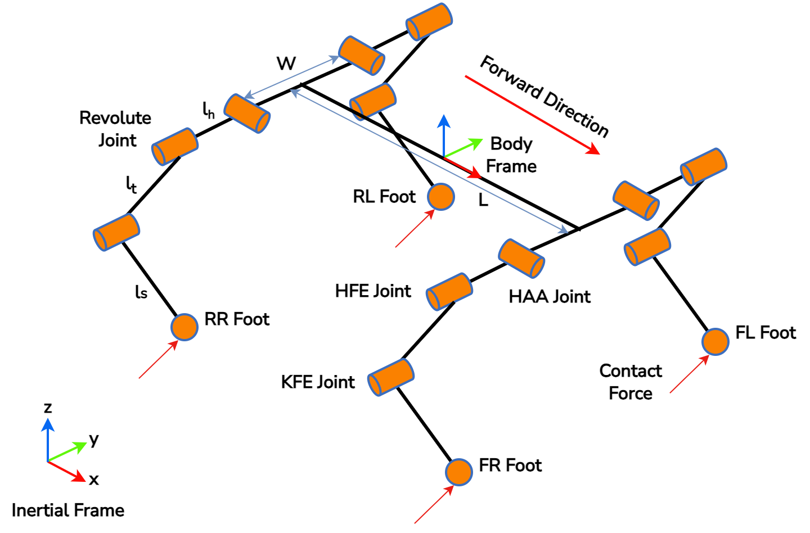
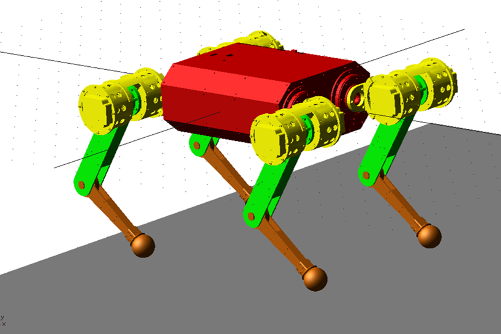
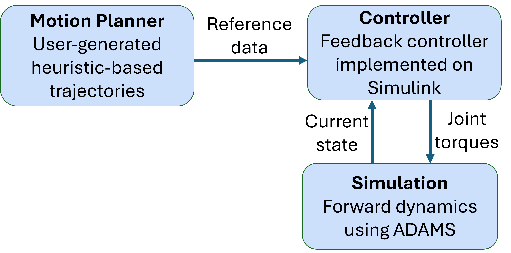
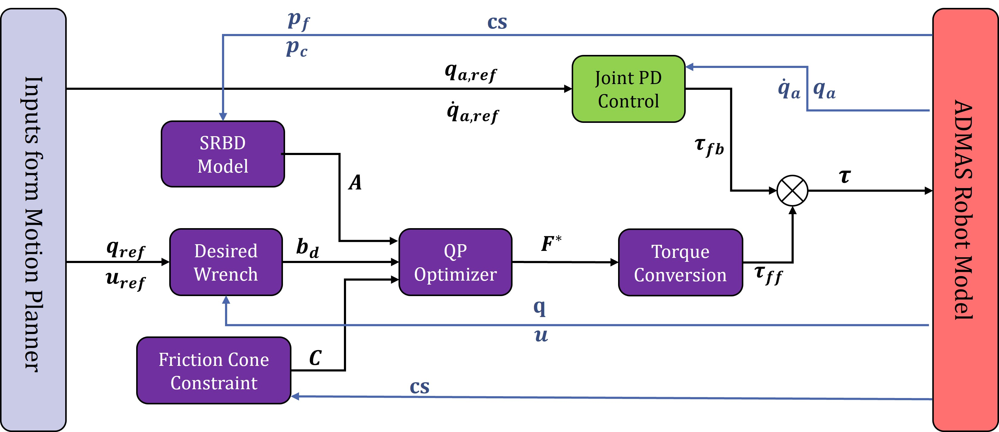
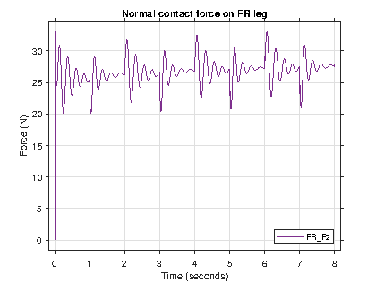
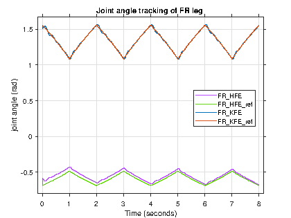
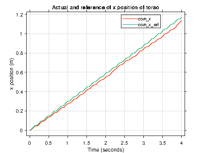
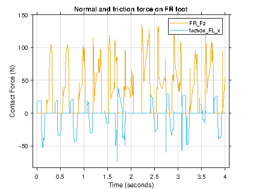

The Problem: Simulating Legged Robots is Hard
Quadruped robots are four-legged machines that can traverse uneven terrain — unlike wheeled robots, which are limited to flat surfaces. But simulating them is genuinely difficult. Their dynamics are high-dimensional (18 degrees of freedom), and the physics of foot–ground contact keeps switching between continuous swing phases and discrete touchdown or lift-off events. These discontinuities produce non-linearities in contact forces that most standard simulators handle poorly.
If you get the contact model wrong in simulation, everything built on top of it — your motion planner, your controller, your stability analysis — is built on sand. A controller that works in a badly-modelled simulator has no guarantee of working on the real machine.
This paper addresses that problem by building a co-simulation framework that pairs MSC ADAMS (a high-fidelity multibody dynamics solver used in automotive and aerospace industries) with MATLAB/Simulink for control. ADAMS handles the robot's forward dynamics and contact physics accurately. MATLAB handles the control algorithms. Together, they give us a safe, reproducible environment to design and test controllers before deploying them on the Svan M2 — India's first commercial quadruped robot, developed by xTerra Robotics and used at IIT Kanpur's Mobile Robotics Laboratory.
The Robot: Svan M2
The Svan M2 is an 11.3 kg medium-sized quadruped that uses quasi-direct drive actuators, giving it high dynamic maneuverability. We model it with an 18 DOF configuration: each of the four legs has three actuated revolute joints, and the floating torso adds six unactuated DOFs.
HAA — Hip Abduction-Adduction (controls lateral leg swing)
HFE — Hip Flexion-Extension (drives the leg forward and backward)
KFE — Knee Flexion-Extension (controls leg extension)
The body frame is placed at the centre of mass (CoM) of the torso. The four feet are labelled FR (front right), FL (front left), RL (rear left), and RR (rear right), with the forward direction along X.

| Parameter | Symbol | Value |
|---|---|---|
| Height | h | 0.25 m |
| Base length | L | 0.40 m |
| Base width | W | 0.12 m |
| Hip length | lh | 0.08 m |
| Thigh length | lt | 0.19 m |
| Shank length | ls | 0.16 m |
| Total mass | mtotal | 11.3 kg |
Building the ADAMS Model
The robot's CAD geometry was imported into ADAMS directly from SolidWorks. To keep the simulation tractable, parts were merged where possible — retaining structural detail while reducing body count. The final ADAMS model consists of 13 rigid bodies: the torso, plus the hip, thigh, and shank for each of the four legs.

Three modelling assumptions keep the simulation clean:
1. M-configuration leg model — the 18 DOF M-config preserves the joint topology of the actual hardware.
2. Frictionless revolute joints — all 12 leg joints are treated as ideal revolutes, ignoring internal joint friction.
3. Rigid bodies — legs and torso are modelled as rigid; structural compliance is ignored.
The Co-Simulation Framework
The framework divides responsibilities cleanly: ADAMS owns the physics, MATLAB owns the control. At each fixed communication interval, the two solvers exchange data and proceed independently — ADAMS computing forward dynamics given current joint torques, MATLAB computing new joint torques given the current robot state.
The motion planner (implemented in MATLAB using Raibert's heuristics) generates reference trajectories: desired base position, orientation, foot placements, velocity profiles, and contact state. The controller consumes this to produce joint torques. ADAMS receives those torques, solves the forward dynamics, and feeds the updated robot state back to MATLAB for the next control cycle.

The technical bridge is the ADAMS Controls Plant Export — a tool that generates an adams_sub Simulink block with input ports for joint torques and output ports for robot state. A C++ solver is used with a non-linear analysis type. Both solvers hold their inputs constant within each communication interval, solve their own equations, then hand off updated values before advancing to the next step.
Why ADAMS over MuJoCo or Gazebo? General-purpose robotics simulators are fast and RL-friendly, but make simplifying assumptions about contact physics. ADAMS is an industrial-grade multibody dynamics tool — its contact modelling is physically accurate enough that the same parameter choices carry meaning when you move to hardware.
Control Architecture: Balance Force Controller
The core control question for a quadruped is: given a desired body motion, what forces should the stance feet exert on the ground? The balance force controller answers this by formulating it as an optimisation problem.
The controller uses the Single Rigid Body Dynamics (SRBD) model, which approximates the full 18 DOF robot as a single rigid body carrying the combined mass and inertia. This is valid for the Svan M2 because the legs are lightweight relative to the torso — leg inertia contributes little to the overall body dynamics. Under SRBD, the relationship between foot contact forces and CoM acceleration is linear, which makes the optimisation problem tractable.
The controller finds the optimal ground reaction forces at each stance foot by solving a Quadratic Program (QP) at every timestep:
subject to: CF ≤ d
The three objective terms each serve a distinct purpose:
Term 1 — Tracking: minimises the error between actual CoM dynamics (AF) and the desired wrench bd. The weight matrix S lets you prioritise rotational vs. translational control independently.
Term 2 — Regularisation: penalises unnecessarily large forces, weighted by α. Keeps the solution physically reasonable.
Term 3 — Smoothness: penalises sudden jumps from the previous solution F*prev, weighted by β. Prevents torque chattering.
The constraint CF ≤ d enforces the friction cone at each foot, ensuring the optimised forces lie within feasible bounds so the feet don't slip. The bounds switch automatically between support-leg and swing-leg modes based on the scheduled contact state. The resulting forces are converted to joint torques via the contact Jacobian and combined with feedforward torques from the inverse dynamics model.

Results
Simulations were run in MATLAB 2023 and ADAMS 2023.2 with a communication timestep of 0.01 s. Two gaits were validated: a vertical push-up to test height tracking and joint angle control, and a trot to validate a dynamic diagonally-paired gait on flat ground.
Push-Up
The push-up drives the robot's CoM along a sinusoidal vertical trajectory, with all four feet in constant contact. This isolates the controller's ability to track height and regulate joint angles without the complexity of contact switching.


Contact forces on the FR leg range from 20 N to 33 N over the push-up cycle, peaking at the robot's lowest position. This matches the expected physics: when the CoM is lowest, the legs are most compressed and the normal forces peak. Joint angle tracking for HFE and KFE closely follows the reference, confirming the torque commands are working.
Trot
The trot is a symmetric two-beat gait where diagonal leg pairs (FR+RL, FL+RR) move together. It is the most common dynamic gait for quadrupeds and the most demanding to simulate — contact switches at every half-cycle, and the CoM must stay stable throughout. In our simulation, the robot trots in the forward (X) direction using an open-loop heuristic motion planner.



The contact force plots surface a key physical detail: there are moments where FR and RR are simultaneously in contact with the ground — an unscheduled double-support phase caused by timing imprecision in the open-loop planner. The friction force behaviour on FR is physically correct: it opposes the direction of motion on impact, then reverses as the foot comes to rest and provides forward propulsion.
The main limitation of the trot: the accumulating CoM tracking error is a direct consequence of open-loop motion planning. The planner computes a fixed foot placement schedule with no knowledge of what the robot actually did. A reactive controller — one that updates foot placements based on real-time CoM state — is the natural next step, and is where modern legged locomotion research (MIT Cheetah, ANYmal, Boston Dynamics Atlas) focuses.
What's Next
The co-simulation framework built here gives a solid foundation for more advanced work. The three most important open directions are:
Reactive motion planner — replace the heuristic open-loop planner with one that updates foot placements in real time using the estimated CoM state. This directly addresses the trot tracking error.
Hardware validation — run the same trajectories on the physical Svan M2, log IMU and encoder data, and compare directly against ADAMS output to properly close the sim-to-real loop.
On-board state estimation — the current implementation uses ground-truth torso pose from ADAMS. Real hardware requires a floating-base EKF or similar estimator to recover this from sensors alone.
This research was funded by DRDO under the CARS programme.